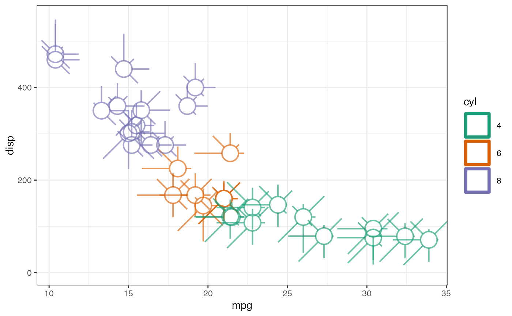
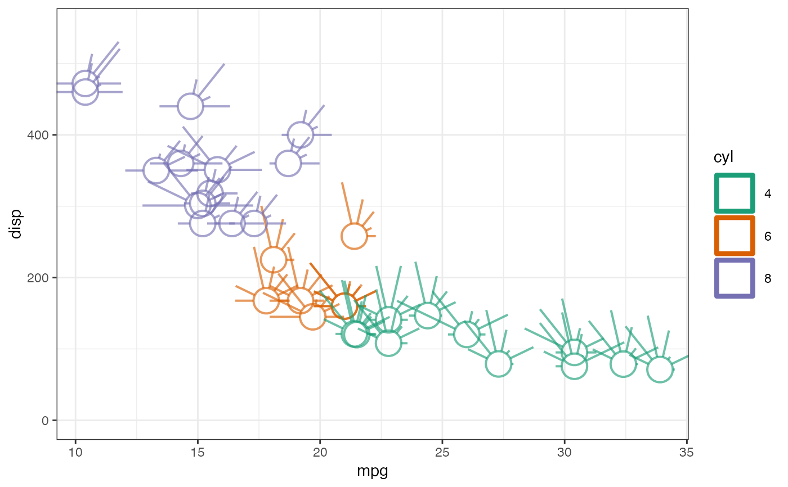
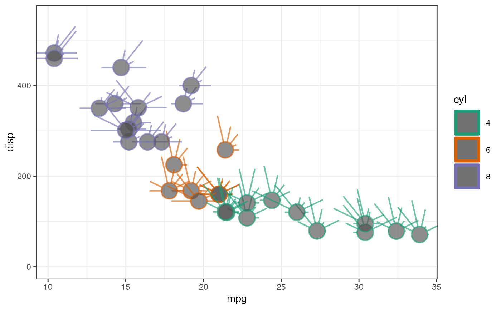
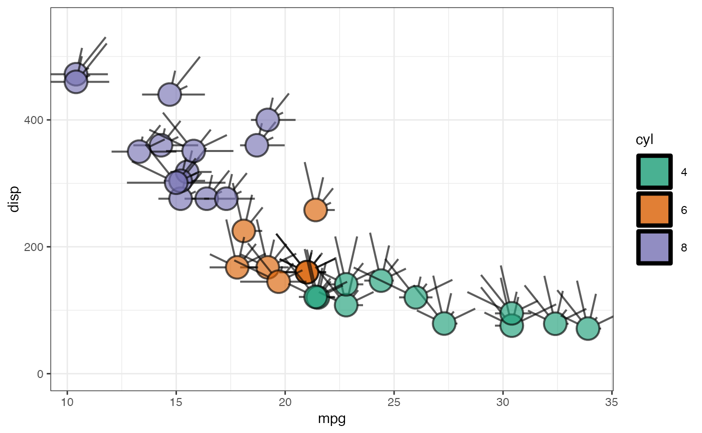
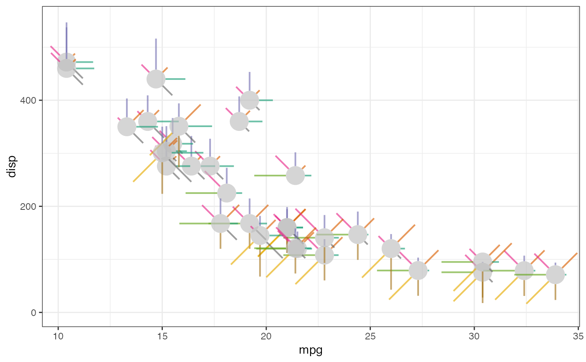
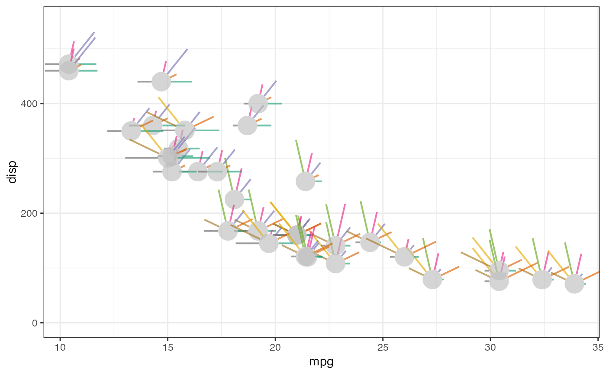
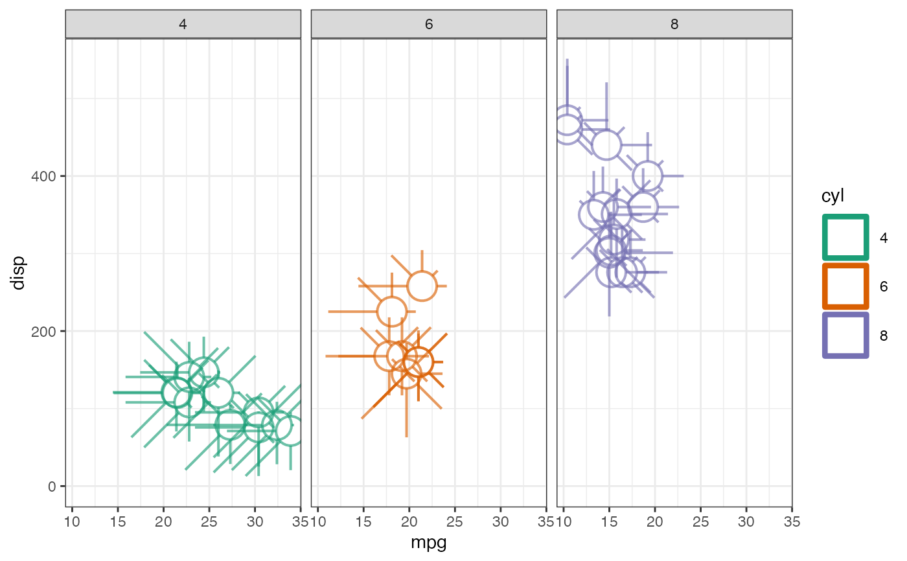
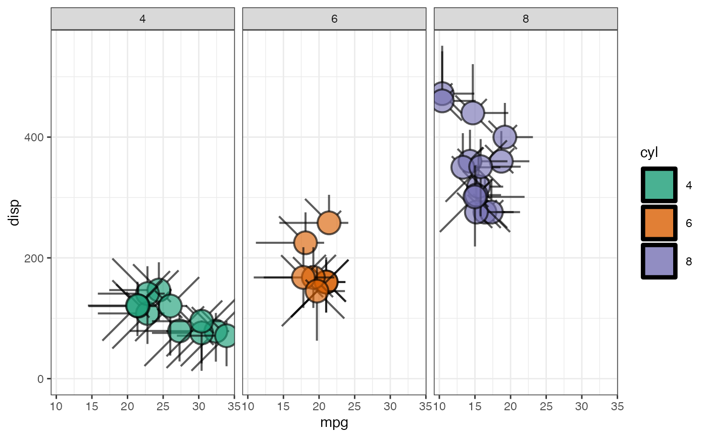

The metroglyph geom is used to plot multivariate data as metroglyphs (Anderson 1957; DuToit et al. 1986) in a scatterplot.
geom_metroglyph( mapping = NULL, data = NULL, stat = "identity", position = "identity", ..., cols = character(0L), circle.size = 1, colour.circle = NULL, colour.ray = NULL, colour.points = NULL, linewidth.circle = 1, linewidth.ray = 1, lineend = "butt", full = TRUE, draw.grid = FALSE, point.size = 1, show.legend = NA, inherit.aes = TRUE )
| mapping | Set of aesthetic mappings created by |
|---|---|
| data | The data to be displayed in this layer. There are three options: If A A |
| stat | The statistical transformation to use on the data for this layer, as a string. |
| position | Position adjustment, either as a string, or the result of a call to a position adjustment function. |
| ... | Other arguments passed on to |
| cols | Name of columns specifying the variables to be plotted in the glyphs as a character vector. |
| circle.size | The size of the central circle (radius). |
| colour.circle | The colour of circles. |
| colour.ray | The colour of rays. |
| colour.points | The colour of grid points. |
| linewidth.circle | The circle line width. |
| linewidth.ray | The ray line width. |
| lineend | The line end style for the rays. Either |
| full | logical. If |
| draw.grid | logical. If |
| point.size | The size of the grid points in native units. |
| show.legend | logical. Should this layer be included in the legends?
|
| inherit.aes | If |
A geom layer.
geom_metroglyph() understands the following
aesthetics (required aesthetics are in bold):
x
y
alpha
colour
fill
group
circle.size
Anderson E (1957).
“A semigraphical method for the analysis of complex problems.”
Proceedings of the National Academy of Sciences of the United States of America, 43(10), 923.
DuToit SHC, Steyn AGW, Stumpf RH (1986).
Graphical Exploratory Data Analysis, Springer Texts in Statistics.
Springer-Verlag, New York.
ISBN 978-1-4612-9371-2.
Other geoms:
geom_dotglyph(),
geom_pieglyph(),
geom_profileglyph(),
geom_starglyph(),
geom_tileglyph()
# Scale the data zs <- c("hp", "drat", "wt", "qsec", "vs", "am", "gear", "carb") mtcars[ , zs] <- lapply(mtcars[ , zs], scales::rescale) mtcars$cyl <- as.factor(mtcars$cyl) mtcars$lab <- row.names(mtcars) library(ggplot2) theme_set(theme_bw()) options(ggplot2.discrete.colour = RColorBrewer::brewer.pal(8, "Dark2")) options(ggplot2.discrete.fill = RColorBrewer::brewer.pal(8, "Dark2")) # Mapped colour ggplot(data = mtcars) + geom_metroglyph(aes(x = mpg, y = disp, colour = cyl), cols = zs, circle.size = 3, colour.ray = NULL, linewidth.circle = 2, linewidth.ray = 2, size = 10, alpha = 0.8) + ylim(c(-0, 550))ggplot(data = mtcars) + geom_metroglyph(aes(x = mpg, y = disp, colour = cyl), cols = zs, circle.size = 3, colour.ray = NULL, linewidth.circle = 2, linewidth.ray = 2, fill = "gray30", size = 10, alpha = 0.8) + ylim(c(-0, 550))ggplot(data = mtcars) + geom_metroglyph(aes(x = mpg, y = disp, colour = cyl), cols = zs, circle.size = 3, colour.ray = NULL, linewidth.circle = 2, linewidth.ray = 2, full = FALSE, size = 10, alpha = 0.8) + ylim(c(-0, 550))ggplot(data = mtcars) + geom_metroglyph(aes(x = mpg, y = disp, colour = cyl), cols = zs, circle.size = 3, colour.ray = NULL, full = FALSE, linewidth.circle = 2, linewidth.ray = 2, fill = "gray30", size = 10, alpha = 0.8) + ylim(c(-0, 550))# Mapped colour + fill ggplot(data = mtcars) + geom_metroglyph(aes(x = mpg, y = disp, colour = cyl, fill = cyl), cols = zs, circle.size = 3, colour.ray = NULL, linewidth.circle = 2, linewidth.ray = 2, size = 10, alpha = 0.8) + ylim(c(-0, 550))ggplot(data = mtcars) + geom_metroglyph(aes(x = mpg, y = disp, colour = cyl, fill = cyl), cols = zs, circle.size = 3, colour.ray = NULL, full = FALSE, linewidth.circle = 2, linewidth.ray = 2, size = 10, alpha = 0.8) + ylim(c(-0, 550))# Mapped fill ggplot(data = mtcars) + geom_metroglyph(aes(x = mpg, y = disp, fill = cyl), cols = zs, circle.size = 3, colour.ray = NULL, linewidth.circle = 2, linewidth.ray = 2, size = 10, alpha = 0.8) + ylim(c(-0, 550))ggplot(data = mtcars) + geom_metroglyph(aes(x = mpg, y = disp, fill = cyl), cols = zs, circle.size = 3, colour.ray = NULL, linewidth.circle = 2, linewidth.ray = 2, colour.circle = "transparent", size = 10, alpha = 0.8) + ylim(c(-0, 550))ggplot(data = mtcars) + geom_metroglyph(aes(x = mpg, y = disp, fill = cyl), cols = zs, circle.size = 3, colour.ray = NULL, full = FALSE, linewidth.circle = 2, linewidth.ray = 2, size = 10, alpha = 0.8) + ylim(c(-0, 550))ggplot(data = mtcars) + geom_metroglyph(aes(x = mpg, y = disp, fill = cyl), cols = zs, circle.size = 3, colour.ray = NULL, full = FALSE, colour.circle = "transparent", linewidth.circle = 2, linewidth.ray = 2, size = 10, alpha = 0.8) + ylim(c(-0, 550))# Rays with colours ggplot(data = mtcars) + geom_metroglyph(aes(x = mpg, y = disp), cols = zs, circle.size = 3, linewidth.circle = 0, linewidth.ray = 2, colour.circle = "transparent", fill = "gray", colour.ray = RColorBrewer::brewer.pal(8, "Dark2"), size = 10, alpha = 0.8) + ylim(c(-0, 550))ggplot(data = mtcars) + geom_metroglyph(aes(x = mpg, y = disp), cols = zs, circle.size = 3, linewidth.circle = 0, linewidth.ray = 2, colour.circle = "transparent", fill = "gray", colour.ray = RColorBrewer::brewer.pal(8, "Dark2"), size = 10, alpha = 0.8, full = FALSE) + ylim(c(-0, 550))# Faceted ggplot(data = mtcars) + geom_metroglyph(aes(x = mpg, y = disp, colour = cyl), cols = zs, circle.size = 3, colour.ray = NULL, linewidth.circle = 2, linewidth.ray = 2, size = 10, alpha = 0.8) + ylim(c(-0, 550)) + facet_grid(. ~ cyl)ggplot(data = mtcars) + geom_metroglyph(aes(x = mpg, y = disp, fill = cyl), cols = zs, circle.size = 3, colour.ray = NULL, linewidth.circle = 2, linewidth.ray = 2, size = 10, alpha = 0.8) + ylim(c(-0, 550)) + facet_grid(. ~ cyl)rm(mtcars) mtcars[ , zs] <- lapply(mtcars[ , zs], scales::rescale) mtcars[ , zs] <- lapply(mtcars[, zs], function(x) cut(x, breaks = 3, labels = c(1, 2, 3))) mtcars[ , zs] <- lapply(mtcars[ , zs], as.factor) mtcars$cyl <- as.factor(mtcars$cyl) mtcars$lab <- row.names(mtcars) # Grid points ggplot(data = mtcars) + geom_metroglyph(aes(x = mpg, y = disp, colour = cyl), cols = zs, circle.size = 3, colour.ray = NULL, linewidth.circle = 2, linewidth.ray = 2, size = 2.5, alpha = 0.8, draw.grid = TRUE, point.size = 5) + ylim(c(-0, 550))ggplot(data = mtcars) + geom_metroglyph(aes(x = mpg, y = disp, fill = cyl), cols = zs, circle.size = 3, colour.ray = NULL, linewidth.circle = 2, linewidth.ray = 2, size = 2.5, alpha = 0.8, draw.grid = TRUE, point.size = 5) + ylim(c(-0, 550))ggplot(data = mtcars) + geom_metroglyph(aes(x = mpg, y = disp), cols = zs, circle.size = 3, linewidth.circle = 0, linewidth.ray = 2, colour.circle = "transparent", fill = "gray", colour.ray = RColorBrewer::brewer.pal(8, "Dark2"), size = 2.5, alpha = 0.8, draw.grid = TRUE, point.size = 5) + ylim(c(-0, 550))